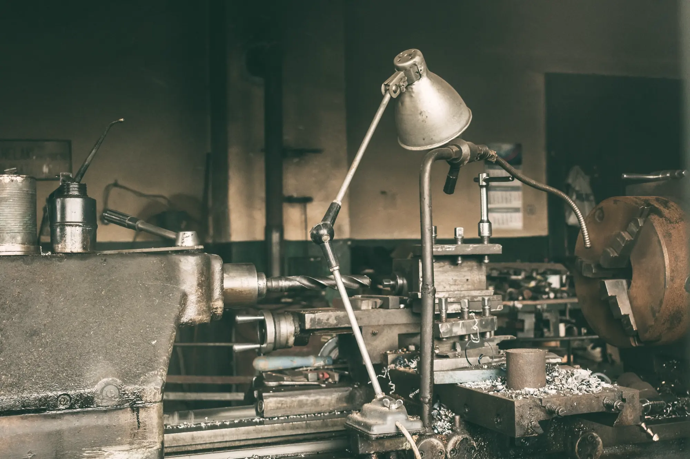
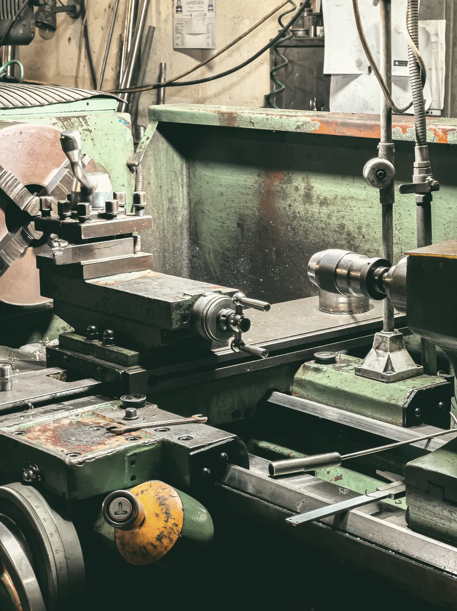

Rodinná firma z Rousínova
Josef Setina začal v roce 1996 s jedním soustruhem v garáži. Dnes firmu vede jeho syn Petr a v hale u dálnice D1 pracuje 34 lidí.

Jak se s námi domluvíte
Poptávku přijme Lenka Hájková a předá ji technologovi. Ten díl nacení, připraví do výroby a zůstane vám jako kontakt až do expedice.
Když se změní výkres nebo termín, voláte jemu. Do Brna to máme 20 minut, do Vyškova 15. Díly po regionu vozíme vlastní dodávkou, hotová zakázka bývá u vás týž den.
Třísky třídíme podle materiálu a vozíme k recyklaci. Halu od roku 2022 vytápíme teplem z kompresorů.

Třicet let ve třech halách
Z garáže do pronajaté dílny a odtud do vlastní haly u D1.
Soustruh v garáži
Josef Setina soustruží náhradní díly pro zemědělská družstva v okolí.
První CNC a první hala
Pronájem dílny v Rousínově a první zaměstnanci.
Certifikace ISO 9001
Začínáme dodávat výrobcům čerpadel a balicích strojů.
Vlastní hala u D1
2 600 m² výroby, svařovna a nové soustružnické centrum.
Pětiosé frézování a měrovna
Dvě pětiosá centra a 3D souřadnicový měřicí stroj.
Druhá generace
Firmu přebírá Petr Setina, Josef zůstává u technologie.
S kým budete mluvit
Telefon zvedáme od šesti ráno. Když nejsme u stolu, zavoláme zpátky týž den.
Lenka Hájková
Obchod a nacenění
+420 517 000 100hajkova@setina-obrabeni.czPetr Setina
Jednatel, nové projekty a nábor
+420 517 000 101setina@setina-obrabeni.czMartin Kubíček
Vedoucí kvality a měrovny
+420 517 000 102kubicek@setina-obrabeni.cz
Kde nás najdete
Průmyslová 1420, 683 01 Rousínov. Z dálnice D1 sjeďte na exitu Rousínov a pokračujte k průmyslové zóně. Naše hala je druhá vpravo.
- Příjem a výdej
- Po–Pá 6:00–14:00. Rampa pro dodávky i kamiony, vysokozdvižný vozík do 3 t.
- Prohlídka
- Halu vám rádi ukážeme. Termín domluvíte s Lenkou Hájkovou, prohlídka trvá asi 45 minut.
- Parkování
- Před halou, šest míst pro návštěvy.
Hledáme frézaře, seřizovače a svářeče
Dvě směny bez nočních a výplata vždy do 10. dne v měsíci. Vyučené bez praxe na CNC zaučíme.
Petr Setinanábor 517 000 101 kariera@setina-obrabeni.cz